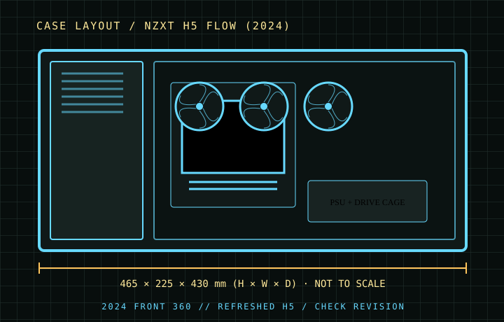

[ CASES // IDENTIFIED CHASSIS ]
NZXT H5 Flow (2024)
The 2024 H5 Flow refresh expands front radiator and motherboard options over earlier H5 Flow revisions and adds a pair of bottom 120 mm fan positions. This page is specific to the 2024-generation shell; do not transfer its 360 mm front support or E-ATX compatibility to the preceding H5 Flow without checking that model’s specification.

MODEL SCOPE: Specifications describe the named enclosure generation, not every visually similar case or retail bundle. Published maximums are component-envelope limits; verify the exact SKU, installed fans/radiators, connectors, and manufacturer manual before purchase or assembly.
Dimensions & compatibility
| Cataloged model | NZXT H5 Flow (2024) |
|---|---|
| Generation / class | 2024 refresh · ATX airflow mid-tower |
| External dimensions | 465 × 225 × 430 mm (H × W × D) |
| Motherboard fit | Mini-ITX, Micro-ATX, ATX and E-ATX up to 277 mm wide. |
| Drive compatibility | One 3.5-inch drive position and two 2.5-inch positions. |
| Graphics card | Up to 410 mm. |
| CPU air cooler | Up to 170 mm tower height. |
| Power supply | Up to 200 mm. |
| Fans and radiators | Front radiator up to 360 mm (or 280 mm); top supports up to 240 mm, with 280 mm fit limited by low-profile memory/assembly clearance; rear 120 mm. Two bottom 120 mm fan positions are available. |
Fit notes for this layout
The sloped PSU-shroud airflow arrangement associated with earlier H5 generations is not a substitute for checking the 2024 bottom-fan mounts. Front and top radiator dimensions describe the mounting envelope, not guaranteed clearance for every thick radiator/fan combination.
- The front 360 mm radiator position is the defining refresh change; measure the combined radiator-and-fan stack against GPU length.
- The 280 mm roof option is clearance-sensitive: use the manufacturer’s memory-height and radiator-thickness conditions, not just the radiator label.
- Storage is intentionally sparse at one 3.5-inch and two 2.5-inch drives; plan SATA cabling and drive placement before routing the PSU harness.
Source record
- NZXT — H5 Flow (2024) specificationsGeneration-specific dimensions, compatibility and cooling limits.
- NZXT — H5 Flow (2024) product informationManufacturer product overview for the updated enclosure.
- KitGuru — NZXT H5 Flow (2024) reviewIndependent review of the revised case layout.
Case specifications are manufacturer-rated maximums unless stated otherwise. Component shape, mounting hardware and assembly order can reduce practical clearance; consult the exact revision manual when dimensions are critical.